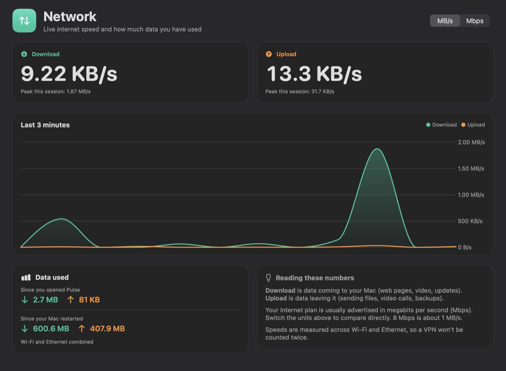
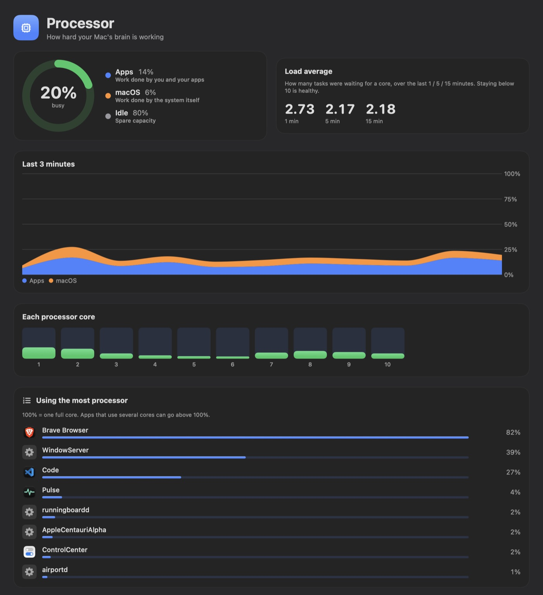
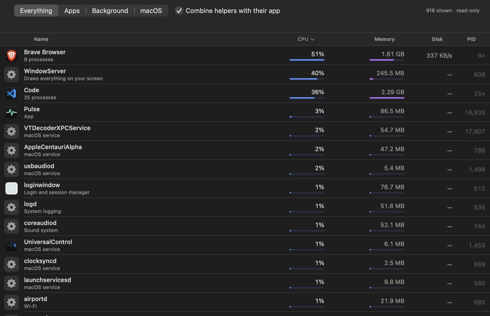

Pulse
A friendlier Activity Monitor that tells you what your Mac is actually doing.
Live CPU, memory, disk and network speed, explained in plain English instead of jargon. See at a glance whether your Mac is healthy, which app is slowing it down, and how fast your internet is — from the app, the menu bar, or a desktop widget. It only reads system statistics: it never quits or changes anything.

What it does
Health at a glance
A one-line verdict — “Everything looks healthy” or “Memory is getting tight” — and, when something is wrong, which app is responsible.
Live network speed
Download and upload speed, a 3-minute graph, session peaks and data totals. Switch between MB/s and Mbps to compare with your internet plan.
Desktop widgets
Small, medium and large widgets show processor, memory, disk, battery and network speed without opening the app.
Menu bar readout
Download stacked above upload in the menu bar, plus a quick panel with CPU, memory and disk rings and your busiest apps.
Explains, not just measures
Memory is split into “Apps / Locked by macOS / Compressed / Cached / Free” with a sentence on what each means. Common system processes are described in plain words.
Read-only by design
No kill or quit buttons, no background services, no data leaves your Mac. It can look, but it can’t touch.
A closer look
Swipe through the screens · tap one to enlarge.



Up and running in a minute
Paste this into Terminal
Downloads the latest release, installs it into /Applications and opens it. Needs macOS 14 or later.
Add the widget
Right-click the desktop → Edit Widgets → System Pulse, then pick small, medium or large.
Uninstall any time
Pulse is ad-hoc signed rather than notarized, so the one-line installer above is the smoothest route. If you download the zip in a browser instead, macOS will ask you to right-click the app and choose Open the first time. You can also build it from source with just the Xcode Command Line Tools: ./build.sh install.
Under the hood
Measured the way Activity Monitor does
- CPU from per-core tick counters (
host_processor_info). - Memory from
host_statistics64, using Activity Monitor’s own definitions of App, Wired, Compressed and Cached. - Per-process figures from
proc_pid_rusage— the physical footprint macOS itself reports. - Disk and battery through IOKit.
Accurate network numbers
- Reads 64-bit interface counters from the routing socket (
NET_RT_IFLIST2). The commongetifaddrscounters are 32-bit and wrap around every 4 GB, which would show false spikes on fast connections. - Counts physical links only, so a VPN tunnel isn’t counted twice.
Light on your Mac
- Uses roughly 4–5% of a single core with the window open.
- The costly process scan pauses when no Pulse window is on screen; the menu bar speed only needs a ~6 ms system sample each second.
- Root-owned processes (like
WindowServer) can’t be read through libproc, so they’re filled in via the system’s setuidps— still strictly read-only.
Trade-offs I made on purpose
- No per-app network usage. Prototyping it with
nettopcost about 1.3 CPU cores continuously — too heavy for a monitor — so I removed it. - Not on the App Store. The sandbox it requires would block reading other processes’ stats, which is the core feature.
- Built without Xcode. A single
build.shcompiles a universal (Apple Silicon + Intel) binary, assembles the app and widget extension, and signs them.
Take a look at the code
Pulse is open source. Issues, ideas and pull requests are welcome.